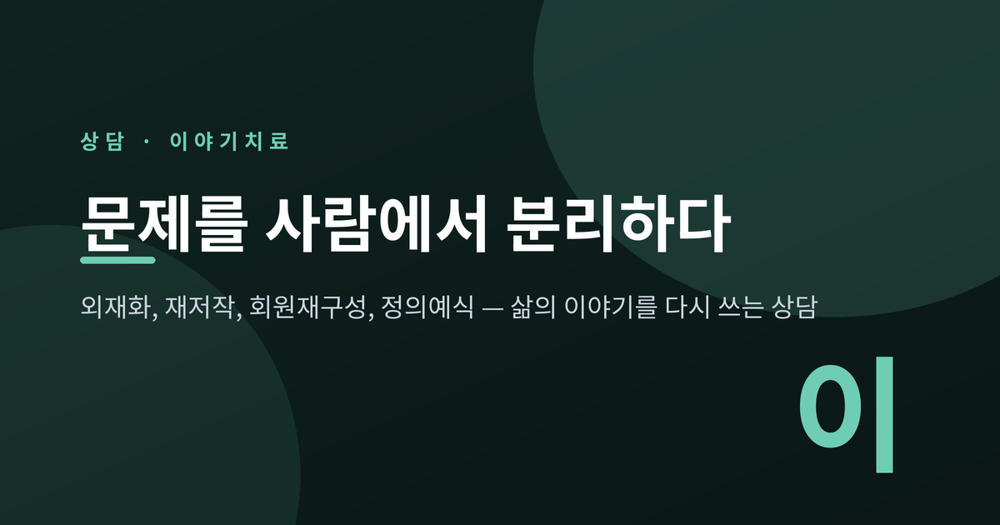
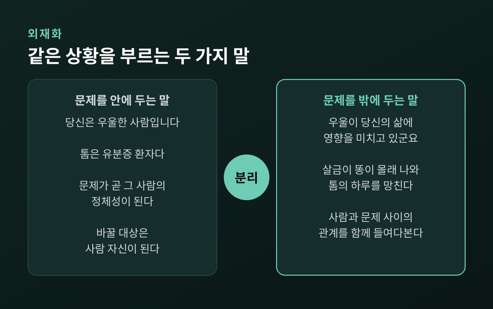
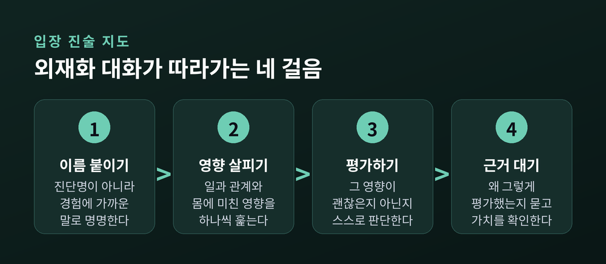
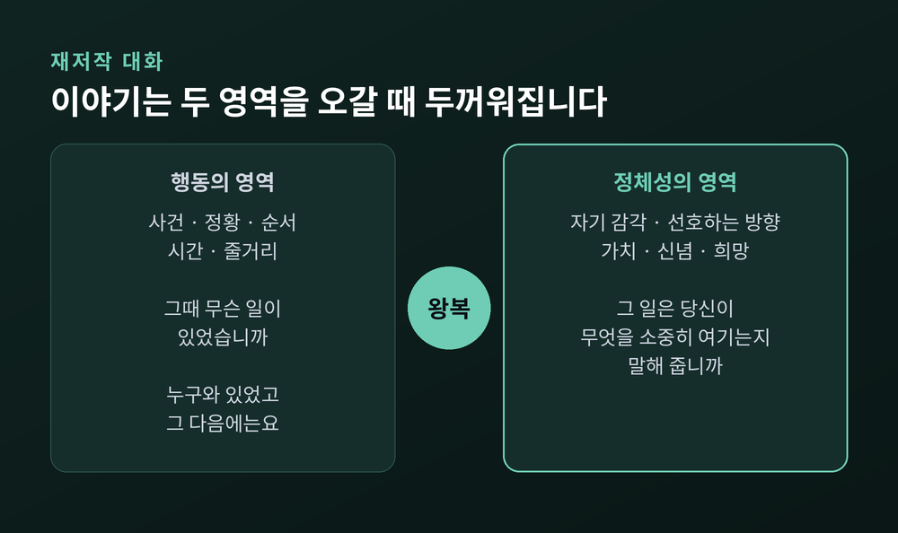
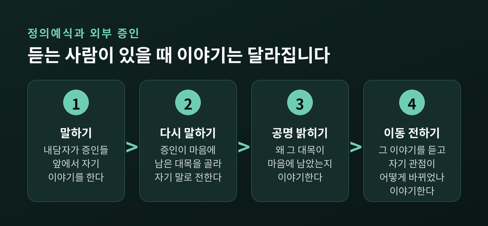
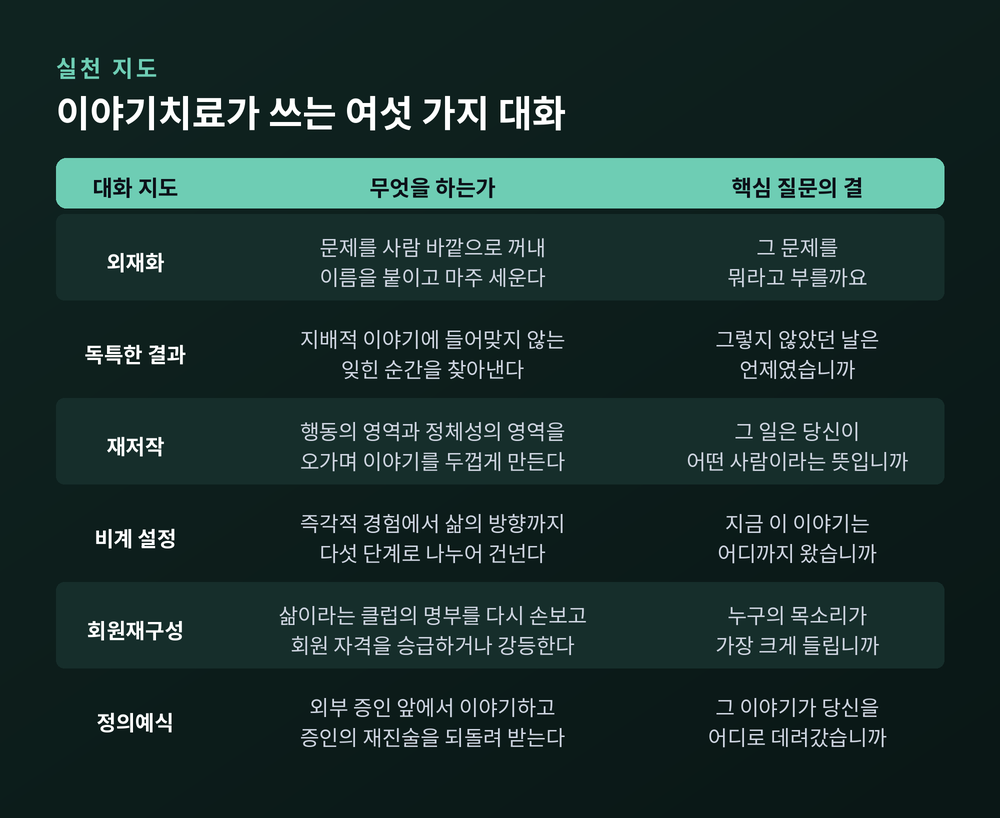
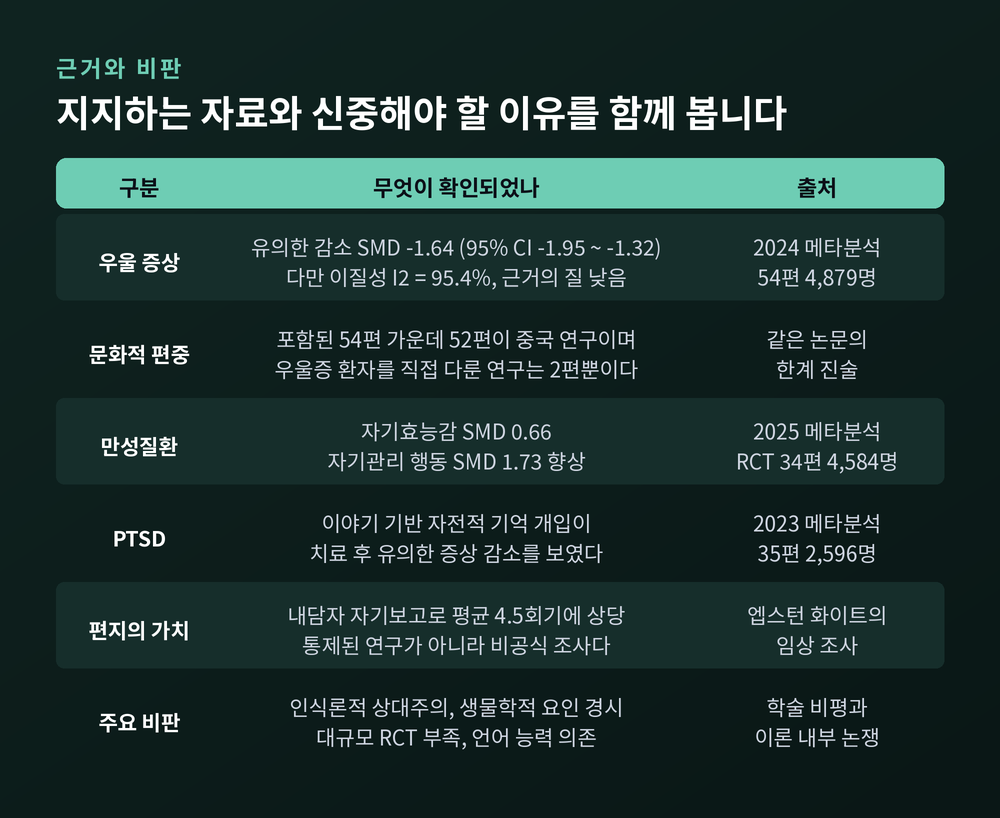

세 줄 요약
이번 글에서는 이야기치료, 곧 내러티브 테라피를 정리해 보겠습니다. 마이클 화이트와 데이비드 엡스턴이 만든 이 접근이 문제를 어떻게 다루는지, 어떤 대화 기법을 쓰는지, 그리고 근거는 어디까지 확인되었는지까지 함께 살펴보려 합니다. 상담을 공부하시는 분과, 상담실 문 앞에서 망설이고 계신 분 모두를 염두에 두고 썼습니다.
이야기치료는 1980년대에 형성되었습니다.
호주 애들레이드의 사회복지사 마이클 화이트(1948~2008)와 뉴질랜드 오클랜드의 가족치료사 데이비드 엡스턴이 함께 만들었습니다. 화이트는 1983년 애들레이드에 덜위치 센터를 세웠습니다. 아내 셰릴 화이트와 함께 운영한 비영리 기관이었고, 그는 이곳의 뉴스레터를 통해 자기 생각을 조금씩 세상에 내놓았습니다.
두 사람의 이름을 널리 알린 책은 1990년에 나온 『이야기 심리치료 방법론(Narrative Means to Therapeutic Ends)』입니다. 실천의 절차를 지도(map) 형태로 정리한 『이야기 실천의 지도(Maps of Narrative Practice)』는 2007년에 출간되었습니다. 화이트는 이듬해인 2008년 4월 세상을 떠났습니다.
국내 도입도 짧지 않습니다. 1990년대부터 2018년 중반까지 발표된 국내 학위논문과 학술지 논문 107편을 분석한 연구가 있을 정도입니다.
이야기치료를 한 문장으로 압축하면 이렇게 됩니다.
"사람이 문제가 아니라, 문제가 문제다."
문장 하나가 바뀌었을 뿐인데 방향이 완전히 달라집니다. 상담자는 "당신은 우울한 사람입니다"라고 말하지 않습니다. 대신 "우울이 당신의 삶에 영향을 미치고 있군요"라고 말합니다. 문제를 사람 안에 심어 두지 않고, 사람 바깥에 꺼내 놓는 것입니다. 이것을 외재화(externalizing)라고 부릅니다.
외재화의 초점은 '문제 있는 사람'이 아니라 사람과 문제 사이의 관계입니다.
화이트가 초기에 다룬 사례가 이 차이를 잘 보여줍니다. 그는 1984년에 아동의 유분증을 다룬 논문을 발표했습니다. 거기서 그는 증상에 '살금이 똥(Sneaky Poo)'이라는 이름을 붙였습니다.
"톰은 유분증 환자다"라고 말하면, 그 말은 톰의 정체성에 대해 무언가를 결정해 버립니다. 그런데 "살금이 똥이 몰래 빠져나와 톰의 하루를 망쳐 놓고 있다"고 말하면, 톰은 자기 문제를 두고 벌어지는 대화에 참여할 수 있게 됩니다. 화이트가 아이에게 던진 질문은 이랬습니다.
"네가 살금이 똥의 대장이니, 아니면 살금이 똥이 네 대장이니?"
아이를 고치려는 질문이 아닙니다. 아이와 문제를 떼어 놓고, 그 사이의 힘겨루기를 함께 들여다보자는 초대입니다.

외재화는 즉흥적인 말재간이 아닙니다. 화이트는 여기에 입장 진술 지도(Statement of Position Map)라는 절차를 붙였습니다. 외재화 대화 지도라고도 부릅니다.
순서는 네 단계입니다.
이 지도를 끝까지 따라가면 사람과 문제 사이에 거리가 생깁니다. 문제가 포함되지 않은 자리에 잠시 서 볼 수 있게 되는 것입니다. 화이트는 이런 지도가 "버려두었던 삶의 측면들에 호기심을 갖고, 방치되었던 정체성의 영역에 매혹되는" 탐구를 만든다고 적었습니다.

화이트와 엡스턴의 전제는 이렇습니다. 사람이 어려움을 겪는 것은, 자기 삶에 대해 스스로 혹은 남이 지어낸 이야기가 실제로 살아낸 경험을 다 담아내지 못할 때라는 것입니다.
이렇게 한 사람의 삶을 독점한 이야기를 지배적 이야기, 또는 문제로 가득 찬 이야기라고 부릅니다.
"나는 늘 도망쳤다. 나는 누구와도 오래 못 간다."
이런 문장은 삶의 수많은 장면 중 특정한 것들만 골라 꿰어 만든 줄거리입니다. 그리고 이 줄거리에 들어맞지 않는 장면들은 그대로 버려집니다.
버려진 그 장면들을 이야기치료는 독특한 결과(unique outcomes)라고 부릅니다. '반짝이는 순간'이라 부르기도 합니다. 도망치지 않고 한 번 버텼던 날, 그만두려다 하루 더 나갔던 아침 같은 것들입니다. 지배적 이야기에는 이 순간들이 놓일 자리가 없기 때문에 쉽게 잊히고 무시됩니다.
상담자가 하는 일은 두 가지입니다. 그 순간이 내담자의 가치와 삶의 목적에서 무엇을 뜻하는지 함께 생각하는 일. 그리고 그 순간들을 재료로 다음 대화를 여는 일입니다.
화이트에게는 부재하지만 암시된 것(absent but implicit)이라는 개념도 있습니다. 사람은 어떤 경험을 다른 경험과 대조하며 의미를 만듭니다. 그러니 어떤 고통을 호소한다는 것 자체가, 그와 대비되는 무언가를 이미 소중히 여기고 있다는 뜻이 됩니다. 상실의 크기는 애착의 크기를 알려줍니다.
독특한 결과를 하나 찾았다고 이야기가 바뀌지는 않습니다. 그 순간은 아직 너무 얇습니다. 이야기를 두껍게 만드는 작업이 재저작 대화(re-authoring conversation)입니다.
재저작 대화는 두 영역을 왕복합니다. 문학 이론에서 빌려온 구분입니다.
사건만 모으면 이야기에 뼈대만 남습니다. 의미만 물으면 근거가 없는 다짐이 됩니다. 두 영역을 번갈아 오갈 때 비로소 이야기에 살이 붙습니다.
이 대화가 하는 일은 "무슨 일이 있었고, 어떻게 그렇게 되었고, 그것이 무엇을 뜻하는지" 이해하려는 노력을 되살리는 것입니다.

여기서 화이트는 뜻밖의 곳에서 도구를 빌려옵니다. 발달심리학자 비고츠키입니다.
비고츠키의 근접발달영역은 혼자서 해낼 수 있는 것과 누군가와 함께라면 해낼 수 있는 것 사이의 거리를 말합니다. 그 거리를 건너려면 과제를 감당할 만한 크기로 쪼개 주는 비계(飛階)가 필요합니다.
화이트는 상담 대화를 이 비계로 보았습니다. 그가 정리한 비계 설정 지도는 다섯 단계의 '거리두기 과제'로 되어 있습니다. 낮은 수준에서는 방금 일어난 사건의 즉각적 경험을 다룹니다. 중간 수준에서는 흩어진 사건들을 연결해 비슷한 것과 다른 것을 판단하게 합니다. 높은 수준에서는 삶의 방향을 개념으로 세우고 계획으로 옮깁니다.
흥미로운 것은 이 부분이 실증 연구로 확인되었다는 점입니다. 아동 상담 회기를 순차 분석한 연구에서, 상담자들이 실제로 화이트의 지도대로 아이의 반응에 비계를 세웠고, 한 회기 동안 두 사람의 발화가 지도의 수준을 따라 올라가는 경향이 관찰되었습니다. 이론이 실제 대화의 흐름과 맞아떨어진 셈입니다.
회원재구성 대화(re-membering conversation)는 문화인류학자 바버라 마이어호프의 작업에서 나왔습니다. 화이트는 그의 글을 읽고 이 이름을 붙였습니다.
발상은 이렇습니다. 한 사람의 삶을 여러 회원이 속한 하나의 클럽으로 떠올려 보는 것입니다.
그 명부에는 누가 올라 있습니까. 그중 누구의 목소리가 지금 가장 크게 들립니까.
이야기치료는 이 명부를 다시 손볼 수 있다고 봅니다. 어떤 회원의 자격을 승급할 수도, 어떤 회원의 자격을 강등할 수도 있습니다. 이미 세상을 떠난 사람도, 오래전 담임 선생님도, 심지어 어린 시절 키우던 개나 책 속 인물도 회원이 될 수 있습니다.
마이어호프는 회원재구성을 두고 "첫 사건에 따라왔던 모든 감각과 정서와 연상이 회복되고, 과거가 다시 붙잡힌다"고 적었습니다. 기억을 떠올리는 일이 아니라, 관계를 다시 배치하는 일에 가깝습니다.
마이어호프의 또 다른 개념이 정의예식(definitional ceremony)입니다.
그는 캘리포니아 베니스에 모여 살던 유대인 노인들과 작업했습니다. 동유럽에서 나치의 박해를 피해 건너온 이들이었습니다. 홀로코스트로 가족 대부분을 잃고 낯선 나라에 정착한 뒤, 이들은 고립과 정체성 상실을 겪고 있었습니다.
마이어호프는 정의예식을 "비가시성과 주변성의 문제를 다루는 전략"이라고 정의했습니다. 이야기하는 사람과 그것을 듣는 청중을 함께 마련해 주는 방식입니다.
상담실에서 이 구조는 외부 증인(outsider witness) 실천으로 옮겨졌습니다. 내담자가 자기 이야기를 하고, 초대된 증인들이 그것을 듣습니다.
중요한 것은 증인이 하는 일입니다. 증인은 평가하지 않습니다. 조언하지 않습니다. 박수도 치지 않습니다. 대신 자기에게 특별히 와닿은 대목을 다시 말하고, 그 이야기를 들으며 자기 관점이 어떻게 흔들리고 달라졌는지를 이야기합니다.
말하는 사람은 자기 이야기가 누군가의 삶을 실제로 움직였다는 것을 확인하게 됩니다. 화이트는 이 구조를 가족치료의 반영팀 작업에 다시 적용하기도 했습니다.

이야기치료에는 치료적 문서라는 독특한 실천이 있습니다. 회기에서 새로 나온 이야기를 편지나 문서로 적어 내담자에게 건네는 것입니다. 특히 엡스턴이 오래 발전시킨 방식입니다.
두 사람은 내담자들에게 직접 물어본 적이 있습니다. "이런 편지 한 통은 몇 회기 정도의 가치가 있다고 보십니까."
돌아온 답의 평균은 4.5회기였습니다. 치료 전체의 긍정적 성과 가운데 편지가 차지하는 몫은 평균 40~90%로 평가되었습니다.
다만 이 숫자는 신중하게 다뤄야 합니다. 무작위 대조 시험이 아니라, 내담자에게 물어 얻은 자기보고 기반의 비공식 조사이기 때문입니다. 그럼에도 한 가지는 분명해 보입니다. 말은 회기가 끝나면 흩어지지만, 글은 남아서 다시 읽힙니다.

이야기치료는 후기구조주의의 통찰 위에 서 있습니다.
정신적 어려움을 개인 안에 고정된 병리로 보지 않습니다. 대신 지배적 문화 서사와 언어, 권력 체계의 산물로 봅니다. 그래서 상담은 사람들이 자기 가치와 역할과 실패에 대해 들어 왔던 이야기를 해체하는 작업이 됩니다.
화이트는 여기서 미셸 푸코의 권력/지식 개념을 가져왔습니다. 무엇이 정상이고 무엇이 결핍인지를 정하는 지식 자체가 이미 권력의 산물이라는 관점입니다.
상담자의 자리도 달라집니다. 예전의 상담자가 문제를 진단하고 해석을 내려 주는 전문가의 자리에 있었다면, 이야기치료의 상담자는 탈중심적이되 영향력 있는 자리에 섭니다. 이야기의 저자는 내담자이고, 상담자는 그 저술을 돕는 편집자에 가깝습니다.
여기서부터는 조심스럽게 말씀드려야겠습니다.
가장 큰 규모의 자료는 2024년에 나온 체계적 문헌고찰 및 메타분석입니다. 신체 질환을 가진 성인의 우울 증상을 대상으로 했고, 연구 54편, 참여자 4,879명을 모았습니다.
결과는 SMD −1.64 (95% 신뢰구간 −1.95 ~ −1.32)로, 통계적으로 유의한 우울 증상 감소였습니다. 수치만 보면 큰 효과입니다.
그런데 같은 논문이 스스로 밝힌 한계가 만만치 않습니다.
다른 자료도 있습니다. 만성질환 영역에서는 무작위 대조 시험 34편, 4,584명을 모은 2025년 메타분석이 이야기 기반 개입의 자기효능감 향상(SMD 0.66)과 자기관리 행동 향상(SMD 1.73)을 보고했습니다. PTSD 영역에서는 35편, 2,596명을 모은 2023년 메타분석이 이야기 기반 자전적 기억 개입의 유의한 증상 감소를 보고했습니다.
한 가지 구별할 것이 있습니다. 이야기노출치료(NET)는 트라우마 기억을 연대기적 생애 서사 안에서 처리하는 구조화된 프로토콜로, 화이트·엡스턴의 이야기치료와는 다른 접근입니다. NET의 PTSD 근거를 이야기치료의 근거로 옮겨 읽으면 안 됩니다.

좋은 점만 적으면 균형이 맞지 않습니다. 제기되어 온 비판을 함께 적습니다.
첫째, 인식론적 상대주의. 포스트모더니즘과 사회구성주의는 "진리는 없고 관점만 있다"는 입장에 가깝습니다. 비판자들은 이 토대가 검증 가능한 현실을 밀어낼 수 있다고 지적합니다.
둘째, 생물학적 요인의 경시. 임상적 우울이나 범불안장애에는 문서화된 신경화학적·유전적 요소가 있습니다. 저조한 기분의 일부가 갑상선 문제에서 비롯되었다면, 아무리 능숙한 재구성도 그 기제를 직접 다루지는 못합니다.
셋째, 대규모 무작위 대조 시험의 부족. 인지행동치료와 비교하면 확실히 얇습니다.
넷째, 언어와 성찰 능력에 대한 의존. 말로 자기를 표현하기 어려운 상태, 급성 위기 상황에서는 적용이 제한됩니다.
다섯째, 이론 내부의 긴장. 이야기치료는 스스로를 푸코적 실천으로 규정하면서 동시에 개인의 행위주체성에 강하게 기댑니다. 화이트가 이 긴장을 충분히 해소하지 않았다는 학술적 지적이 있습니다.
정리하자면 이렇습니다. 이야기치료는 사람을 병리로 환원하지 않는다는 점에서 분명한 미덕을 가졌지만, 아직 완결된 체계는 아닙니다.
이해를 돕기 위해 일반화된 가상의 장면을 하나 그려 보겠습니다. 특정 인물이나 실제 사례가 아닙니다.
한 사람이 "저는 무능한 사람입니다"라는 말을 안고 상담실에 들어옵니다.
상담자는 그 문장을 반박하지 않습니다. 대신 묻습니다. "그 생각을 뭐라고 부르면 좋을까요." 잠시 뒤 그는 "감시자"라는 이름을 떠올립니다.
다음 질문이 이어집니다. 감시자는 언제 가장 목소리가 커집니까. 감시자가 당신에게서 무엇을 빼앗아 갔습니까. 그 결과가 당신에게 괜찮습니까. 왜 괜찮지 않다고 생각하십니까.
마지막 질문에서 그는 이렇게 답합니다. "저는 원래 제 일을 잘하고 싶은 사람이었으니까요."
이 문장이 실마리가 됩니다. 감시자의 목소리가 유난히 작았던 날을 함께 찾습니다. 그날 무슨 일이 있었는지 묻고, 그 일이 그가 어떤 사람이라는 걸 말해 주는지 묻습니다. 그런 대화가 몇 번 쌓이면 "무능한 사람"이라는 한 줄짜리 이야기 옆에, 조금 더 두꺼운 다른 이야기가 놓이기 시작합니다.
문제가 사라진 것이 아닙니다. 문제가 삶의 전부를 차지하던 배치가 달라진 것입니다.
끝으로 한 마디만 더 드리겠습니다.
이야기치료가 하는 일은 없던 이야기를 지어내는 것이 아닙니다. 이미 살아냈지만 줄거리에 끼지 못해 버려진 장면들을 다시 주워 담는 일에 가깝습니다.
"문제는 당신의 전부가 아니라, 당신 삶의 한 부분입니다."
다만 한 가지는 꼭 덧붙이고 싶습니다. 이 글은 이야기치료라는 접근을 소개하는 글일 뿐, 자가 진단이나 자가 치료의 지침이 아닙니다. 지금 겪고 계신 어려움이 일상을 흔들 정도라면 혼자 해결하려 하시기보다 전문 상담기관이나 정신건강의학과 전문의를 찾아 도움을 받으시길 권합니다. 특히 우울이나 불안이 오래 이어지거나 스스로를 해치고 싶은 마음이 든다면 지체 없이 전문가의 도움을 받으셔야 합니다. 어떤 상담 접근을 택할지도 그 자리에서 함께 의논하시는 편이 안전합니다.
당신의 이야기를 당신이 다시 쓸 수 있겠냐고 물으신다면, 저는 혼자서는 어렵지만 곁에 들어줄 사람이 있다면 가능하다고 답하겠습니다.